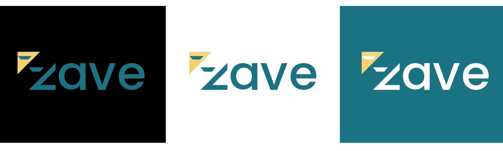

/Branding & Visual Identity — Fintech Logo & Brand Guidelines
Zave
"Zave" is a fintech app that allows users to redeem points and invest in mutual funds seamlessly. Users can manage their investments with ease, track their portfolio, and have the flexibility to withdraw funds anytime directly into their personal accounts. With Zave, the process of investing and accessing returns becomes simple and convenient, offering a user-friendly platform for both beginners and experienced investors.
Logo Design & Brand Identity
The "ZAVE" logo is a visually striking design that combines modernity with simplicity. The logo features the text "ZAVE" in a clean, sans-serif font. In branding, teal colour is frequently used to represent sophistication, reliability, and modernity. It evokes a sense of harmony and professionalism, making it a versatile and effective color for corporate and fintech applications where trust and clarity are essential. The shade in the image seems deliberate, aiming to communicate both calm and confidence to the viewer.
Logo Design
Brand Identity
Color Palettes
Teal (Blue-Green)
Teal is frequently used to represent sophistication, reliability, and modernity.
#197383
White
White color is a shade of purity and innocence.
#FFFFFF
Golden Yellow
The golden-yellow color symbolizes optimism, warmth, and positivity. This shade evokes success, wealth, and energy, making it ideal for a sense of motivation and ambition. In branding, gold tones represent luxury, achievement, and high quality.
#F0CB56
Logo Concept
An early exploration on grid paper: taking the "100%" idea of return and reshaping it into a bold, angular "Z" — adding a dash to sharpen the mark before it was resolved into a clean geometric form.
Logo Variants
The angular "Z" monogram, its two-tone teal-and-gold combination mark, and the standalone gold triangle — three ways the same geometry can stand on its own.
Meaning Behind The Mark
Branding Colour — The golden-yellow color, which often symbolizes optimism, warmth, and positivity. This shade evokes feelings of success, wealth, and energy, making it ideal for creating a sense of motivation and ambition. In branding, gold tones are frequently used to represent luxury, achievement, and high quality.

Construction Grid
A precise proportion grid underpins the wordmark and monogram, keeping every angle, stroke width, and negative-space cut consistent wherever the mark is reproduced.
Logo Geometry
Typography
Poppins carries the entire identity in a single weight. Its geometric letterforms — built from simple circles, triangles, and rectangles — give the brand a clean, symmetrical, contemporary, tech-savvy feel suited to a fintech product.
Stationery
Letterhead and envelope carry the mark into everyday print correspondence.
Apparel
Four poses across teal and white tees — the wordmark on the chest, and the gold triangle mark as a standalone badge.
Out Of Home
A subway platform billboard puts the diagonal gold-and-white brand panel to work at city scale.